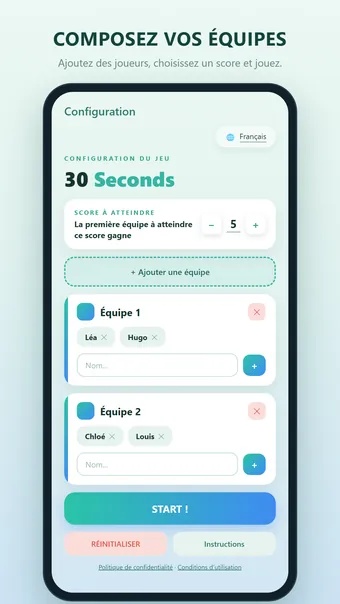
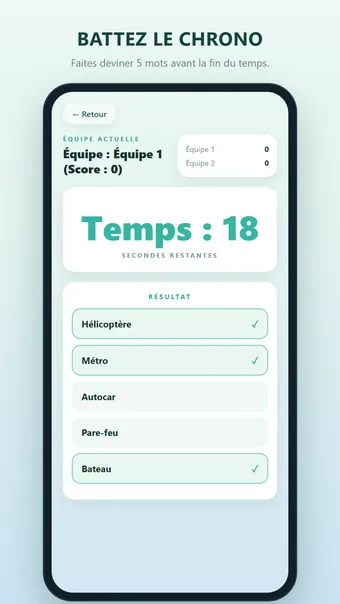
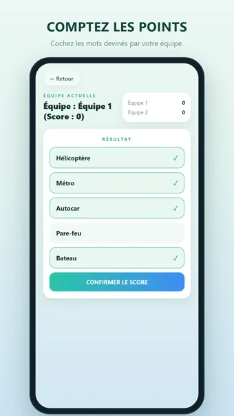
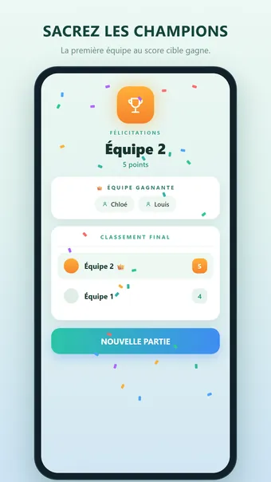

À propos de 30 Seconds
Jouez à 30 Seconds, le jeu de devinettes de mots ultra-rapide et hilarant qui transforme toute réunion en compétition animée. Rassemblez vos amis, votre famille ou vos collègues, formez les équipes et préparez-vous à rire, crier et battre le chrono.
Comment jouer
Un joueur reçoit 5 mots secrets et seulement 30 secondes pour les faire deviner à son équipe — sans dire le mot ni une traduction. Chaque mot trouvé rapporte un point. La première équipe à atteindre le score cible gagne !
Pourquoi vous allez adorer
- Vite appris, impossible à lâcher
- Parfait pour les fêtes, les trajets, les soirées en famille et les brise-glaces
- Idéal de 4 à plus de 20 joueurs
- Les manches ne durent que 30 secondes — aucune attente
- Une immense bibliothèque de mots intégrée, mélangée à chaque manche
Jouez à votre façon
- Équipes illimitées — ajoutez-en autant que vous voulez
- Score cible personnalisable : une partie rapide à 15 ou une bataille épique à 50
- Interface épurée et moderne aux douces teintes menthe
- Instructions intégrées pour apprendre en quelques secondes
9 langues incluses
- Néerlandais, anglais, allemand, français, espagnol, portugais, italien, polonais et turc
- Chaque langue a sa propre liste de milliers de mots — pas la traduction d'une seule liste
- Toute l'interface est également traduite
- Changez de langue directement depuis l'écran de configuration, pour qu'un groupe mixte joue dans la langue qui lui convient
- Ajoutez vos propres mots par langue
Astuces
- Utilisez synonymes, descriptions et exemples — jamais le mot lui-même
- Passez un mot difficile et continuez ; la vitesse prime sur la perfection
- Changez de personne à chaque manche pour que tout le monde joue
Gratuit. L’application affiche des publicités, que vous pouvez supprimer avec un achat facultatif ; aucun compte n’est nécessaire.
Questions fréquentes
30 Seconds est-il gratuit ?
Oui. 30 Seconds se télécharge et se joue gratuitement. L’application affiche des publicités, que vous pouvez supprimer avec un achat intégré facultatif.
30 Seconds fonctionne-t-il hors ligne ?
Oui. 30 Seconds fonctionne sans connexion internet : vous pouvez jouer dans l’avion, dans le train ou partout sans Wi-Fi.
Faut-il un compte pour jouer à 30 Seconds ?
Non. Aucune inscription ni connexion : ouvrez l’application et jouez. Vos parties et vos réglages restent sur votre appareil.
Comment jouer à 30 Seconds ?
Un joueur reçoit 5 mots secrets et seulement 30 secondes pour les faire deviner à son équipe — sans dire le mot ni une traduction. Chaque mot trouvé rapporte un point. La première équipe à atteindre le score cible gagne !
Où télécharger 30 Seconds ?
30 Seconds est disponible pour les téléphones et tablettes Android sur Google Play. Utilisez le bouton en haut de cette page.
D’autres jeux qui pourraient vous plaire
Word Connect
Reliez les lettres pour former des mots. Puzzles infinis et défi quotidien.
Google PlayDame de pique
Le jeu de cartes classique. Jouez hors ligne contre des adversaires malins.
Google PlayMots Mêlés
Le classique des mots mêlés. Puzzles infinis et un défi quotidien inédit.
Google PlayMentions légales
Vous trouverez ci-dessous les documents juridiques qui s’appliquent à 30 Seconds.
Contact
Une question, un avis ou une demande liée à la vie privée ? Écrivez à joostmuijsenberg.dev@gmail.com.